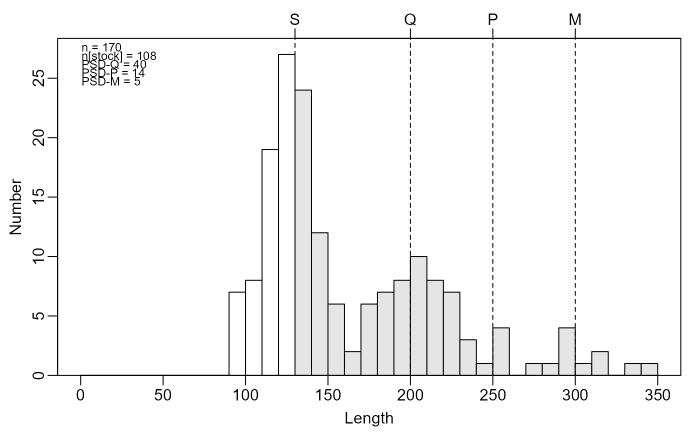
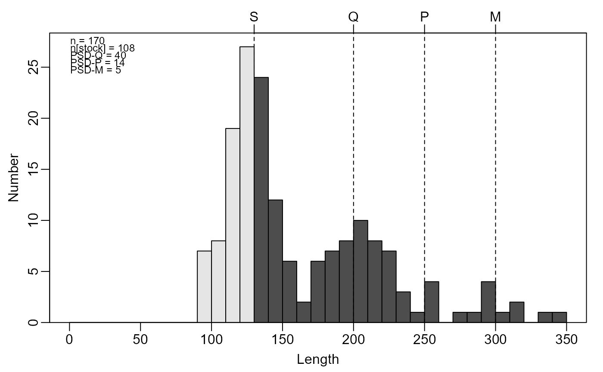

Constructs a length-frequency histogram with Gabelhouse lengths highlighted.
psdPlot(formula, data, species = "List", units = c("mm", "cm", "in"), startcat = 0, w = 1, justPSDQ = FALSE, main = "", xlab = "Length", ylab = "Number", xlim = NULL, ylim = c(0, max(h$counts)), substock.col = "white", stock.col = "gray90", psd.col = "black", psd.lty = 2, psd.lwd = 1, show.abbrevs = TRUE, psd.add = TRUE, psd.pos = "topleft", psd.cex = 0.75, ...)
Arguments
| formula | A formula of the form |
|---|---|
| data | A data.frame that minimally contains the length measurements given in the variable in the |
| species | A string that contains the species name for which Gabelhouse length categories exist. See |
| units | A string that indicates the type of units used for the length measurements. Choices are |
| startcat | A number that indicates the beginning of the first length-class. |
| w | A number that indicates the width of length classes to create. |
| justPSDQ | A logical that indicates whether just stock and quality (for PSD-Q calculations) categories should be used. If |
| main | A string that serves as the main label for the histogram. |
| xlab | A string that serves as the label for the x-axis. |
| ylab | A string that serves as the label for the y-axis. |
| xlim | A numeric vector of length two that indicates the minimum and maximum values (i.e., fish lengths) for the x-axis. |
| ylim | A numeric vector of length two that indicates the minimum and maximum values for the y-axis. |
| substock.col | A string that indicates the color to use for the bars representing under-stock size fish. |
| stock.col | A string that indicates the color to use for the bars representing stock size fish. |
| psd.col | A string that indicates the color to use for the vertical lines at the Gabelhouse length category values. |
| psd.lty | A numeric that indicates the line type to use for the vertical lines at the Gabelhouse length category values. |
| psd.lwd | A numeric that indicates the line width to use for the vertical lines at the Gabelhouse length category values. |
| show.abbrevs | A logical that indicates if the abbreviations for the Gabelhouse length categories should be added to the top of the plot. |
| psd.add | A logical that indicates if the calculated PSD values should be added to the plot (default is |
| psd.pos | A string that indicates the position for where the PSD values will be shown. See details in |
| psd.cex | A numeric value that indicates the character expansion for the PSD values text. |
| … | Arguments to be passed to the low-level plotting functions. |
Value
None. However, a graphic is produced.
Details
Constructs a length-frequency histogram with the stock-sized fish highlighted, the Gabelhouse lengths marked by vertical lines, and the (traditional) PSD-X values superimposed.
The length of fish plotted on the x-axis can be controlled with xlim, however, the minimum value in xlim must be less than the stock length for that species.
IFAR Chapter
6-Size Structure.
References
Ogle, D.H. 2016. Introductory Fisheries Analyses with R. Chapman & Hall/CRC, Boca Raton, FL.
Guy, C.S., R.M. Neumann, and D.W. Willis. 2006. New terminology for proportional stock density (PSD) and relative stock density (RSD): proportional size structure (PSS). Fisheries 31:86-87. [Was (is?) from http://pubstorage.sdstate.edu/wfs/415-F.pdf.]
Guy, C.S., R.M. Neumann, D.W. Willis, and R.O. Anderson. 2006. Proportional size distribution (PSD): A further refinement of population size structure index terminology. Fisheries 32:348. [Was (is?) from http://pubstorage.sdstate.edu/wfs/450-F.pdf.]
Willis, D.W., B.R. Murphy, and C.S. Guy. 1993. Stock density indices: development, use, and limitations. Reviews in Fisheries Science 1:203-222. [Was (is?) from http://web1.cnre.vt.edu/murphybr/web/Readings/Willis%20et%20al.pdf.]
See also
See psdVal, psdCalc, psdAdd, PSDlit, lencat, tictactoe, lencat, and rcumsum for related functionality.
Examples
## Random length data # suppose this is yellow perch to the nearest mm mm <- c(rnorm(100,mean=125,sd=15),rnorm(50,mean=200,sd=25), rnorm(20,mean=300,sd=40)) # same data to the nearest 0.1 cm cm <- mm/10 # same data to the nearest 0.1 in inch <- mm/25.4 # put together as data.frame df <- data.frame(mm,cm,inch) ## Example graphics op <- par(mar=c(3,3,2,1),mgp=c(1.7,0.5,0)) # mm data using 10-mm increments psdPlot(~mm,data=df,species="Yellow perch",w=10)# cm data using 1-cm increments psdPlot(~cm,data=df,species="Yellow perch",units="cm",w=1)# inch data using 1-in increments psdPlot(~inch,data=df,species="Yellow perch",units="in",w=1)# same as first with some color changes psdPlot(~mm,data=df,species="Yellow perch",w=10,substock.col="gray90", stock.col="gray30")# ... but without the PSD values psdPlot(~mm,data=df,species="Yellow perch",w=10,psd.add=FALSE)# ... demonstrate use of xlim psdPlot(~mm,data=df,species="Yellow perch",w=10,xlim=c(100,300))## different subsets of fish # ... without any sub-stock fish brks <- psdVal("Yellow Perch") tmp <- Subset(df,mm>brks["stock"]) psdPlot(~mm,data=tmp,species="Yellow perch",w=10)# ... without any sub-stock or stock fish tmp <- Subset(df,mm>brks["quality"]) psdPlot(~mm,data=tmp,species="Yellow perch",w=10)# ... with only sub-stock, stock, and quality fish ... only PSD-Q tmp <- Subset(df,mm<brks["preferred"]) psdPlot(~mm,data=tmp,species="Yellow perch",w=10)# ... with only sub-stock fish (don't run ... setup to give an error) tmp <- Subset(df,mm<brks["stock"])# NOT RUN { psdPlot(~mm,data=tmp,species="Yellow perch",w=10) # }par(op)